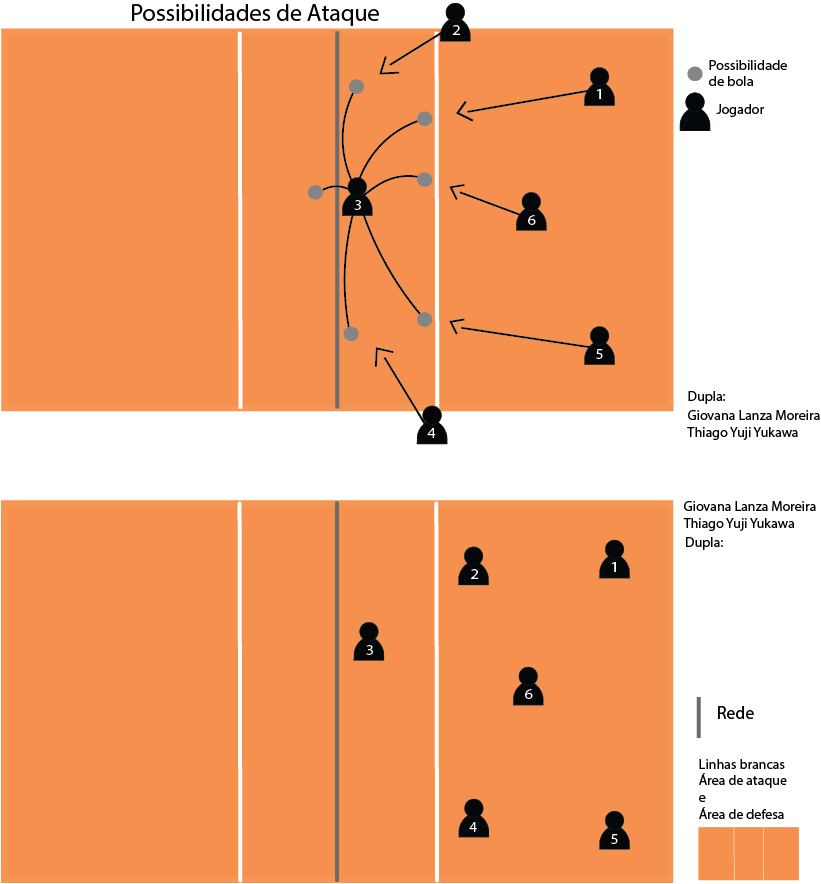

O fundamento de ataque é uma ação realizada próximo à rede e consiste em acertar a bola a fim de marcar um ponto. Geralmente é o terceiro contato de uma equipe com a bola. O ataque realizado pelo levantador recebe o nome de bola de segunda.

Ilustração de Possibilidades de Ataque
Quadra e Regras
Existem a linha de frente (Zona de ataque ou rede) e a linha de trás (Zona de defesa ou fundo da quadra).
Todos os jogadores da quadra podem realizar o ataque(corte) exeto o líbero.
O líbero não pode levantar a bola na Zona de ataque.
No seu impulso, o(s) pé(s) do jogador não deve(m) ter tocado nem ultrapassado alinha de ataque se forem da zona de defesa.
Após o golpe, o jogador pode cair dentro da zona de frente.
Um jogador golpeia a bola dentro do espaço de jogo da equipe adversária é falta.